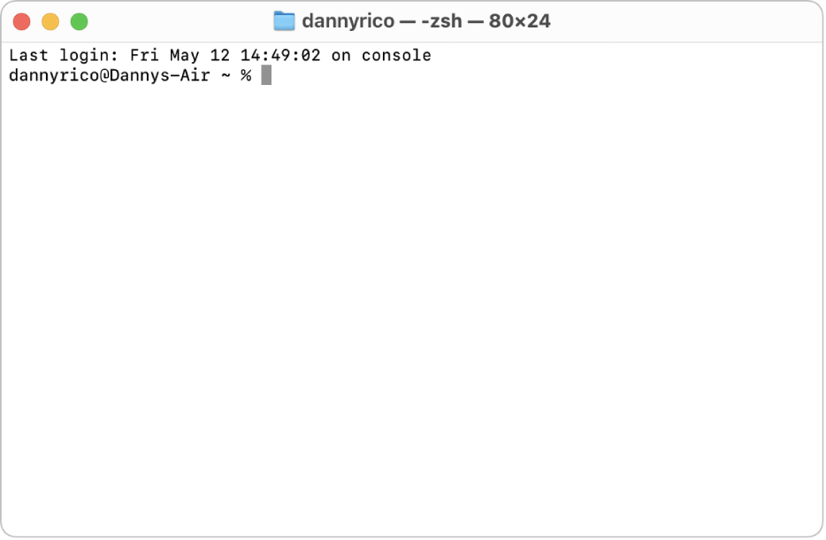
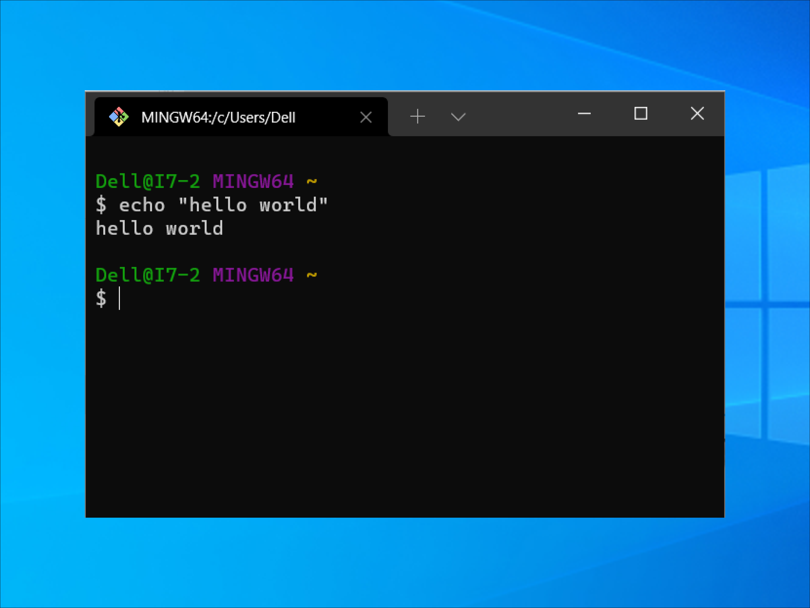

Git Explained
Imagine you work like normal, as usuall. However, in between your work, you can create checkpoints for you to go back to or rewind to your previous itteration of your work. That is version control!
As previously mention, Git is a software, do not get it confused with GitHub, in which we will learn about as well. Git is a software that you install in your local machine to use version control, and GitHub is a service provider to host your code remotely. They are different and yet they work together.
Let's Get Git
Click here to download git. It will redirect you to the official download page (Trust me bro)
Just follow the installation process. Don't worry, there's no way you can mess this up, right?? 👀
Done installing, what now?
Congrats 🎉
Now you have to open your terminal. But wait, you're not one of those pesky Windows user are you? Hmmm? Just kidding HaHa... But seriously, it works differently on Windows.
-
MacOS and Linux
Once you got Git installed, open your terminal. Don't know what a terminal is? Noprob. Go to your desktop search function and just type in terminal, and... Voilà.
It should look something like this ->
 -
Windows
If you installed Git on Windows, Git Bash comes included as part of the Git For Windows package. Now, what the hell is Git bash?
Short answer, it is terminal for Windows for you to operate Git. Long answer, just look it up online bro, I ain't explaining you all dat. My goal is for you to simply understand, not complicatedly understand.
To launch Git Bash, open the Windows Start menu, type git bash, and press Enter (or click the application icon). It should look something like this ->

Check if Git is properly installed
To do that, just type in git --version on your respected terminal. If the version numbers showed up, that means you have successfully installed Git to your machine, congrats!
If not then you screwed up, man. Just try again, don't give up!!